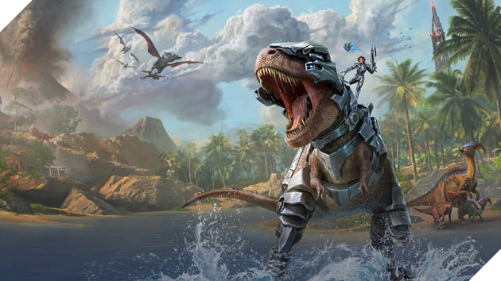
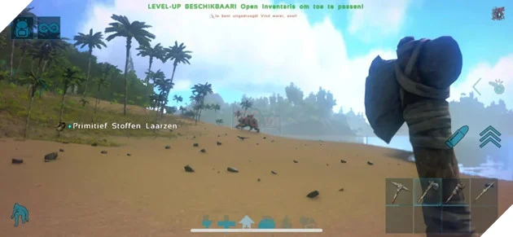
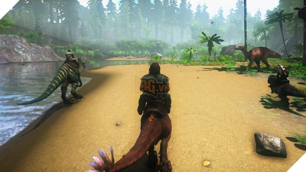

Trải Nghiệm ARK Survival Evolved Trên Điện Thoại Thành Công Rực Rỡ Với Hơn 3 Triệu Lượt Tải
ARK: Ultimate Mobile Edition là phiên bản trên điện thoại dành cho trò chơi ARK Survival Evolved, và nó thể hiện được sức hút vượt trội hơn so với phiên bản PC khá nhiều
ARK: Ultimate Mobile Edition là trò chơi sinh tồn spin-off trong cùng một vũ trụ với ARK: Survival Evolved, ra mắt vào ngày 18 tháng 12 năm ngoái. Mặc dù từng phải đón nhận những đánh giá trái chiều khi ra mắt, ARK: Survival Evolved vẫn bán khá chạy và duy trì sức hút ổn định của mình. Nhờ đó mà về sau game nhận được bản nâng cấp hình ảnh vào năm 2023 với tên gọi ARK: Survival Ascended.
Ngoài ra, thương hiệu này còn có những bản game spin-off khác với dự án mới nhất là ARK: Ultimate Mobile Edition do Grove Street Games phát triển, hiện đang có mặt trên các thiết bị Android và IOS. Là một phiên bản miễn phí với lối chơi tương tự game ARK trên PC và Console, Ultimate Mobile Edition cũng cho phép người chơi thu thập tài nguyên, chế tạo vũ khí, xây dựng cộng đồng, thuần hóa khủng long và làm nhiều hoạt động khác.
Vào ngày 10 tháng 1 vừa qua, nhà phát hành Snail Games cho biết trò chơi trên điện thoại này đã được tải về hơn 3 triệu lượt trong vòng 3 tuần phát hành đầu tiên. Kết quả này vượt trội hơn hẳn so với bản port lên điện thoại năm 2018 của chính ARK: Survival Evolved, và hiện tại Grove Street Games đang bổ sung thêm nội dung cho thế giới khủng long trong game, với những bản đồ mới như Ragnarok, Extinction, Genesis Part 1 và Genesis Part 2.
Hiện tại, ARK: Ultimate Mobile Edition đang nhận được điểm số 3,9 trên 5 dựa vào 412 đánh giá của người dùng App Store, và 3.6 trên 5 dựa vào hơn 52,5 ngàn điểm người dùng của Play Store. Được biết game cũng sẽ ra mắt trên Epic Games Store trong năm 2025 này, giúp người chơi đa dạng hơn về nền tảng trải nghiệm. Studio Wildcard cũng vừa chia sẻ một bản đồ lộ trình dành cho ARK: Survival Ascended, cập nhật những nội dung sẽ sớm ra mắt trong vài tháng tới.